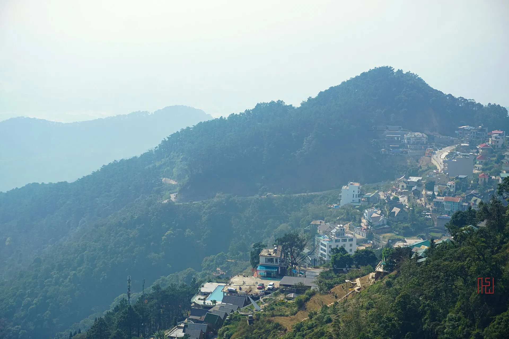

Tam Dao chayote
Chayote shoots and fruit grown on the slopes, stir-fried with garlic or boiled with sesame salt – crunchy and sweet.
Illustrative photo: Chayote garden in Tam Dao Have a real photo of this dish? Send it to Viet Travel
About 85 km from Hanoi, Tam Dao town sits nearly 900 m up and stays cool all year, with French-era villas hidden in the mist, primeval national-park forest and the three peaks of Thach Ban, Thien Thi and Phu Nghia. At the foot of the mountain lies the Tay Thien spiritual area with Truc Lam Zen monastery, the Mother Goddess temple and ancient stupa tombs – a favourite weekend escape for Hanoians.
Loading weather...
Tap a month to see if it's a good time to go
Chayote shoots and fruit grown on the slopes, stir-fried with garlic or boiled with sesame salt – crunchy and sweet.
Illustrative photo: Chayote garden in Tam Dao Have a real photo of this dish? Send it to Viet TravelFree-range chicken grilled over charcoal until golden, with salt, pepper and lime.
Illustrative photo: Whole grilled chicken Have a real photo of this dish? Send it to Viet TravelSmall local pigs grilled in slabs – fragrant, firm meat for a chilly evening.
Illustrative photo: Charcoal-grilled meat Have a real photo of this dish? Send it to Viet TravelChayote stir-fried with garlic, boiled chayote shoots
Chợ thị trấn Tam Đảo Updated 10/2026 ReportGrilled hill chicken, chicken with lime leaves
Thị trấn Tam Đảo Updated 10/2026 ReportGrilled or boiled local pork
Đường lên thị trấn Tam Đảo Updated 10/2026 ReportGrilled skewers, roasted corn and sweet potato
Quảng trường thị trấn Tam Đảo Updated 10/2026 ReportHill-chicken hotpot with mushrooms and chayote
Thị trấn Tam Đảo Updated 10/2026 ReportPho, noodles and rice rolls for breakfast
Thị trấn Tam Đảo Updated 10/2026 ReportVegetarian rice, chicken rice and wild greens
Khu du lịch Tây Thiên, Đại Đình Updated 10/2026 ReportGrilled lake fish and fish hotpot
Hồ Đại Lải Updated 10/2026 ReportIndicative prices per person. Tap an address to open Google Maps for opening hours and the latest reviews.
The stone church, old French villas and winding cloud-covered lanes.
A forest waterfall with stone steps and a suspension bridge.
Truc Lam Zen monastery and the Tay Thien Mother Goddess temple, by cable car or on foot.
Climb Thien Thi peak for a sea of clouds over the delta.
Suggested for this destination and month (pick a start date in the Itinerary section to change the month). Tick items to remember what you have packed.
Spotted a changed price, opening time or closed shop? Report
500k–1.5M / night
Near the square, the stone church and restaurants.
400k–1M / night
Wooden houses with valley views and fireplaces.
1.5M–4M / night
Pools, golf and peace and quiet.
From Hanoi, a bus or limousine van takes about 2 h (85 km) to Tam Dao town, or hire a car; by motorbike go via Vinh Yen then 13 km up the pass.
| From Hanoi |
|
|---|---|
| From Da Nang |
|
| From Ho Chi Minh City |
|
Estimated travel time; one-way budget fare per person – for reference. The option in bold is our suggestion.
Indicative room rates for 2 people per night; higher at Tet, holidays and weekends. Việt Travel earns no commission from booking sites.
Việt Travel · Phu Tho (formerly Vinh Phuc) · Best time: April – September
The stone church, the square and old French villas.
Stir-fried chayote, grilled hill chicken and the misty night market.
A short night stroll, then back to rest
Walk down the stone steps to Silver Waterfall and over the suspension bridge.
Climb to the broadcast tower on Thien Thi peak for the sea of clouds.
Sunset coffee on the pass and grilled local pork.
A short night stroll, then back to rest
Grab banh mi or sticky rice to go if leaving early
Down to Truc Lam Tay Thien Zen monastery at the foot of the mountain.
Cable car or hike to the upper temple, the Mother Goddess temple and ancient stupas.
Back to Tam Dao town for the night.
A short night stroll, then back to rest
End of tour: check out, shop for local specialties and head home.
Breakfast at your stay (often included in the room rate)
Hike a trail through the primeval forest of Tam Dao National Park.
Visit a chayote garden and buy chayote and bamboo shoots to take home.
Chicken hotpot and BBQ at the homestay.
A short night stroll, then back to rest
End of tour: check out, shop for local specialties and head home.
Breakfast at a busy local eatery near your stay
Leave Tam Dao and stop at Dai Lai lake for a stroll or a boat ride.
Arrive in Hanoi.
End of tour: check out, shop for local specialties and head home.
Breakdown: budget
Breakdown: comfort
Breakdown: budget
Breakdown: comfort
Breakdown: budget
Breakdown: comfort
Excludes flights/transport to Tam Dao. Prices are indicative and vary by season.
Entrance fees & opening hours for sights in Tam Dao
Visiting more than one place? Combine Tam Dao with other destinations.
Share your experience
Reader photos
No photos yet – be the first to share a moment in Tam Dao!
Share your photo